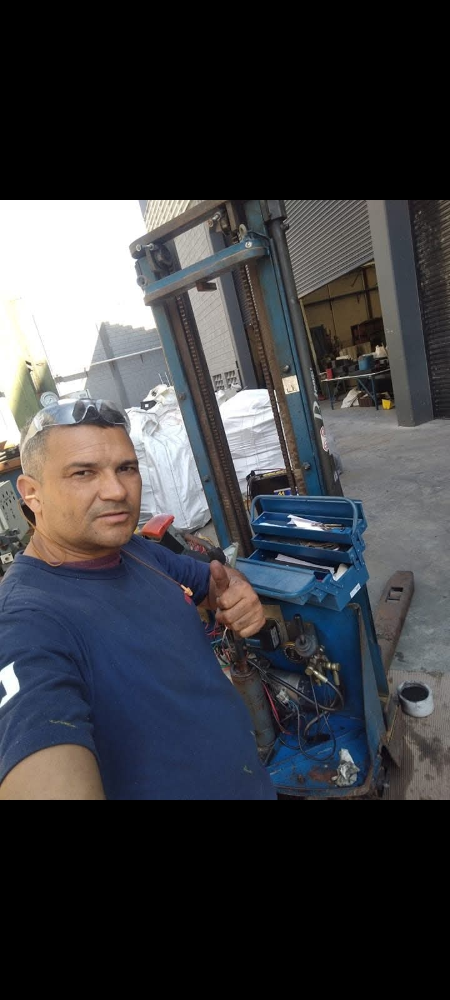

Manutenção
Manutenção e revisão de paleteiras hidráulicas.
ASSISTÊNCIA PROFISSIONAL
Está com qualquer problema em sua paleteira hidráulica? A HidrolesteSP oferece atendimento para avaliação, manutenção e reparos.

O QUE FAZEMOS
Manutenção e revisão de paleteiras hidráulicas.
Atendimento para os mais diversos problemas do equipamento.
Substituição de componentes quando necessário.
Identificação do problema e orientação sobre o serviço.
POR QUE A HIDROLESTESP?
Serviço voltado para manutenção e reparos de paleteiras hidráulicas.
Avaliação do equipamento para entender o que precisa ser reparado.
Atendimento normalmente realizado em toda a região de Itaquaquecetuba-SP.
Fale pelo WhatsApp e explique o problema da sua paleteira.
HIDROLESTESP
A HidrolesteSP oferece serviços para quem estiver com qualquer tipo de problema em sua paleteira hidráulica. O objetivo é avaliar o equipamento e buscar uma solução adequada para cada situação.
📍 Atendimento normalmente realizado em toda a região de Itaquaquecetuba-SP.
SOLICITE ATENDIMENTO
Para agilizar o atendimento, você pode informar o que está acontecendo com o equipamento e, se quiser, enviar fotos diretamente pelo WhatsApp.
Solicitar orçamento pelo WhatsAppFALE CONOSCO
Explique o problema da sua paleteira e solicite atendimento pelo WhatsApp.